地政学
シアトルは太平洋岸北西部の港湾都市で、ピュージェット湾を通じてアジアと結び、カナダ国境やアラスカ航路にも近い。山と水路が都市圏を細く分け、港、空港、鉄道、郊外の技術拠点が地政学的な重みを生む都市である。

🇺🇸 アメリカ合衆国 / 北米 / World City Atlas
クラウド経済、航空宇宙、港湾、音楽、雨の水辺、山に近い暮らしが同じ都市圏で交差する太平洋岸北西部の拠点。
都市の骨格
ピュージェット湾の港、レイク・ワシントン周辺の郊外、研究大学、巨大テック企業、航空宇宙産業が、雨の都市景観の中で互いに結ばれる。
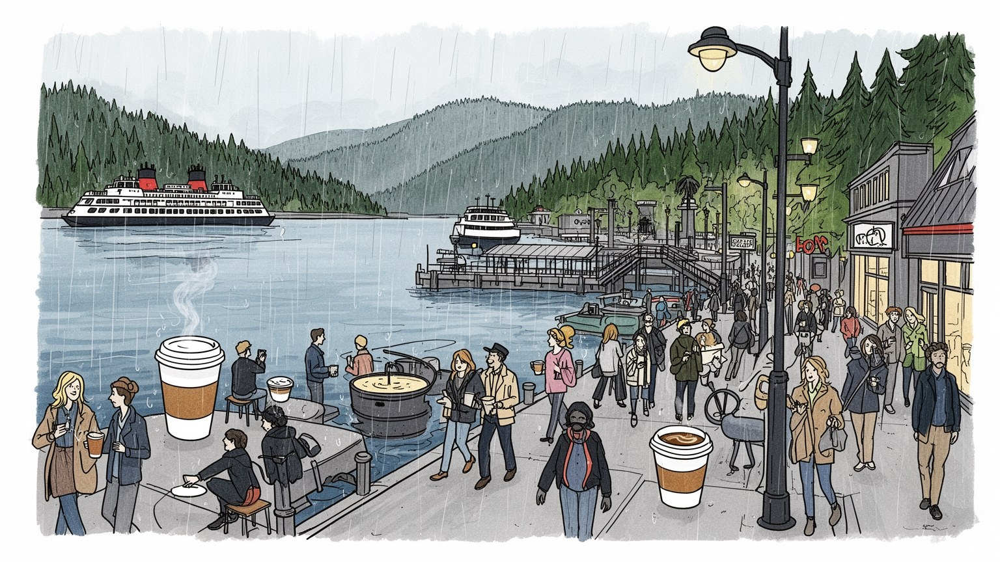
シアトルは太平洋岸北西部の港湾都市で、ピュージェット湾を通じてアジアと結び、カナダ国境やアラスカ航路にも近い。山と水路が都市圏を細く分け、港、空港、鉄道、郊外の技術拠点が地政学的な重みを生む都市である。
クラウド、電子商取引、航空宇宙、港湾物流、大学研究、医療が雇用を押し上げる一方、倉庫、配送、清掃、介護、飲食の労働も都市を支える。高賃金職の集中は住宅費を上げ、広い通勤圏を広げ続ける都市圏である。
先住民の記憶、北欧系やアジア系移民、黒人音楽、教会、環境運動、コーヒー文化が重なる。信仰は大聖堂だけでなく、地域教会、仏教寺院、モスク、シナゴーグ、大学周辺の市民活動にも現れる重要な都市の姿である。
市場やフェリー、ウォーターフロント、ライブハウス、球場、公園は観光と生活の両方で使われる。雨具を持って歩く日常、車と公共交通の使い分け、湖や山へ出る週末が都市の時間感覚をつくる生活の場なのである。
シアトルの現代的な重みは、港や航空宇宙の歴史に、クラウド、電子商取引、ソフトウェア、人工知能、ゲーム、医療研究が重なったところにある。ダウンタウン、サウスレイクユニオン、ベルビュー、レドモンドを結ぶ都市圏には、大企業の本社機能、研究開発、スタートアップ、ベンチャー資金、専門職向けサービスが密集する。高い給与は消費、税収、文化施設を支えるが、同時に住宅費、保育費、通勤時間を押し上げる。オフィスの空室や在宅勤務の広がりは、中心部の飲食店や交通需要にも影響している。テック経済は無形のデータを扱うように見えて、実際には土地、電力、倉庫、配送、人材、移民制度、大学教育に深く依存する。シアトルを読むには、巨大企業の名前だけでなく、その周囲で働く清掃員、警備員、配達員、保育士、公共交通の利用者まで含めて見る必要がある。成功の速さが都市の変化を速め、誰がその速度についていけるのかを問い続けている。さらに税収をめぐる議論は、企業の成長を公共サービスへどう戻すかという問いを生む。道路、学校、公園、低所得者住宅、ホームレス支援は、民間の繁栄だけでは整わない。職場が郊外へ分散するほど、都市圏全体で交通と住宅を調整する力が試される。成長企業の食堂やシャトルの外側に、公共の街路をどう保つかという課題も残るのだ。
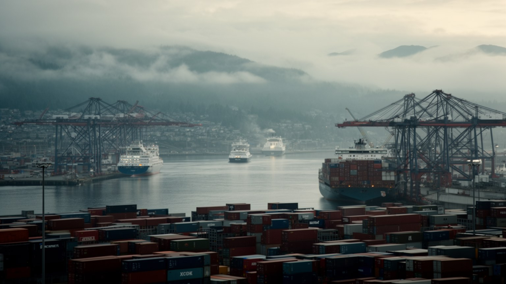
シアトル港は、都市の観光的な水辺とは別に、コンテナ、穀物、機械、海産物、クルーズ船、フェリーが動く実務の空間である。ピュージェット湾はアジア太平洋への距離を縮め、カナダ西岸やアラスカ航路とも接続する。鉄道と高速道路は港を内陸市場へつなぐが、地形の制約や橋の容量、環境規制、労働争議は物流の速度を左右する。港湾労働は高い技能と安全管理を要し、季節や国際需要に影響されやすい。輸入品が郊外の倉庫へ流れ、輸出品が船に積まれる過程には、税関、通関業者、トラック運転手、整備士、港湾警備、船員が関わる。港は都市の富を支える一方、排気、騒音、水質、先住民の漁業権、沿岸再開発の問題も抱える。観光客が眺める湾の美しさと、世界市場を動かす岸壁の労働は同じ水面に接している。だからシアトルの国際性は、空港の到着ロビーだけでなく、雨に濡れたコンテナヤードにも表れている。近年は港湾の自動化、脱炭素燃料、クルーズ観光の環境負荷も争点になっている。港を残すことは雇用を守るだけでなく、都市が水辺を誰のために使うのかを決める政治でもある。タコマ港との役割分担や空港貨物との接続も重要で、港湾は一つの岸壁ではなく広域の物流網として働く。アジアの景気や為替の変化が、地元の倉庫稼働や労働時間に直結する点にも、世界都市としての脆さが見える。
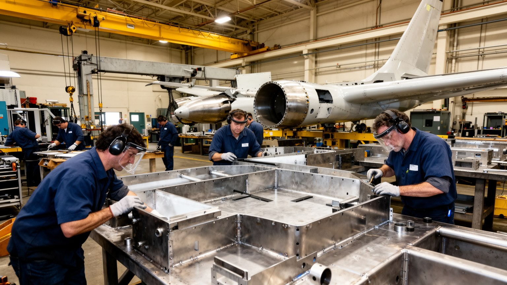
シアトル都市圏の産業史を語るうえで、航空宇宙を外すことはできない。エバレット、レントン、タクウィラ、ケントなどの工場、部品企業、技術者、整備士、労働組合は、民間航空と防衛関連の長い供給網を形づくってきた。飛行機づくりは設計だけでなく、金属加工、複合材、品質検査、工程管理、物流、訓練、保守の積み重ねで成り立つ。景気後退、機体トラブル、海外生産、経営方針の変化は、地域の雇用と誇りを揺らす。高賃金の技能職は中産階級を支え、郊外住宅地や学校区を育ててきたが、外部委託や自動化は労働の安定を弱める。テック企業の急成長が注目されるほど、航空宇宙の現場は古い産業のように見られがちだが、実際には材料科学、ソフトウェア、安全認証、国際取引が重なる高度な都市機能である。シアトルの空を見上げることは、世界の移動を支える地域労働の厚みを見ることでもある。労働組合の交渉は賃金だけでなく、安全文化、技能継承、地域に仕事を残すかどうかにも関わる。世界中の航空会社が発注を変えるたび、工場のシフトや若い技術者の進路も揺れる。都市の産業記憶は、滑走路の外にある家庭の生活設計にも刻まれている。熟練工の経験は学校や訓練施設へ受け渡され、地域の誇りとしても語られる。航空宇宙は空港の風景だけでなく、郊外の通勤路、組合会館、部品倉庫、昼休みの食堂に根を張る産業である。
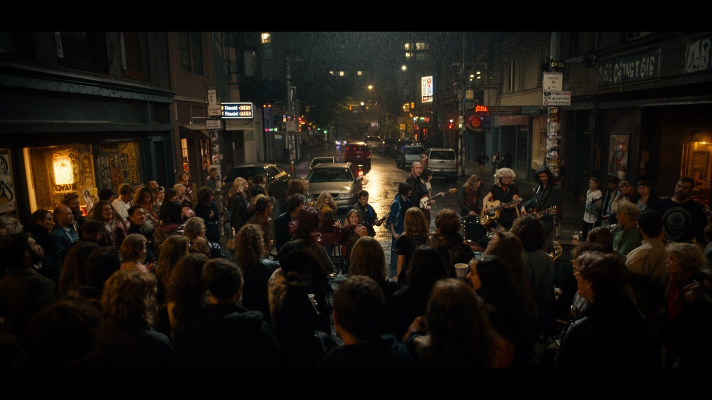
シアトルの文化は、音楽、コーヒー、書店、映画館、大学、移民食、環境運動が絡み合っている。グランジやオルタナティブロックの記憶は観光資源になったが、街の音はそれだけではない。ジャズ、ヒップホップ、インディー、電子音楽、教会音楽、学生バンド、先住民の儀礼、アジア系コミュニティの祭りが、異なる規模の会場で続いている。ライブハウスは家賃上昇や騒音規制の影響を受けやすく、若い演奏者が住める住宅の有無は文化の持続に直結する。パイク・プレイス・マーケット周辺の観光的なにぎわいと、キャピトルヒルや大学地区の夜の表現は、同じ都市でも違う速度で変化する。音楽文化は都市ブランドを飾るだけでなく、孤独、労働、雨、反権威、地域の自尊心を表す言葉でもあった。シアトルを文化都市として読むなら、有名な過去を消費するだけでなく、小さな会場や練習室を維持する経済条件まで見る必要がある。レコード店、独立系ラジオ、地域フェス、教会の合唱、学校の音楽教育は、商業的な成功とは別の回路で才能を育てる。観光が記念碑化した音を求めるほど、現在の若い表現がどこで生まれているかを歩いて確かめる意味が増す。移民の料理店や地域の祭りも、音楽と同じく街の記憶を更新する。文化を保存するとは、昔の名前を掲げるだけでなく、次の世代が失敗できる安い場所を残すことでもある。
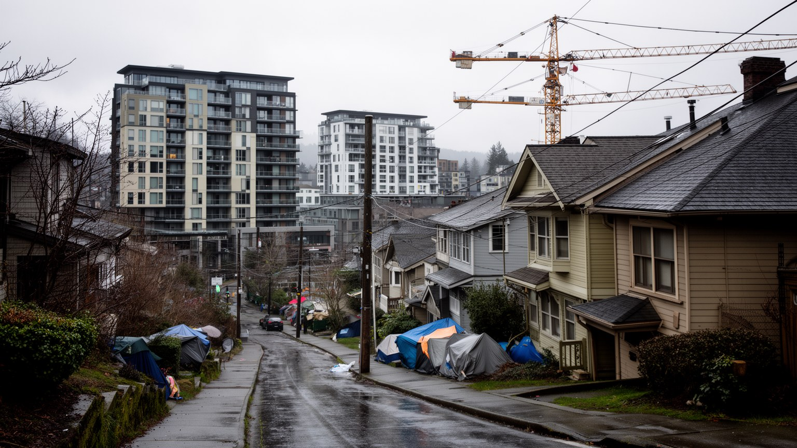
シアトルは高賃金の専門職が集まる一方で、住宅費の上昇とホームレス問題が深刻な都市でもある。湖や湾、丘陵に囲まれた地形は魅力であると同時に、住宅供給を制約し、人気地区の地価を押し上げる。単独住宅地の規制、再開発、公共交通沿線の高密度化、低所得者向け住宅、家賃補助をめぐる議論は、都市の将来像を左右する。新しい集合住宅や店舗は街に活気をもたらすが、長く住んだ住民や小商店を押し出すこともある。黒人コミュニティの歴史を持つセントラルディストリクトでは、資産形成、差別、再開発、文化の継承が絡む。路上生活者への支援は、住宅、医療、依存症、精神保健、警察、近隣不安を一体で考えなければ進まない。豊かなテック都市という印象だけでは、シアトルの日常は見えない。所得の高さと住み続ける難しさが隣り合うところに、この都市の社会的な緊張がある。郊外へ移れば家賃は下がることもあるが、通勤時間や交通費、保育の手配が重くなる。住まいの問題は個人の選択ではなく、 zoning、税制、公共交通、雇用分布が重なった都市政策の結果である。誰を都心に残すのかが、シアトルの公共性を測る基準になる。テントの列を撤去するだけでは住まいは生まれず、支援施設だけでも地域の不安は消えない。住宅を増やす速度、支援の質、近隣との信頼づくりを同時に進められるかが問われている。
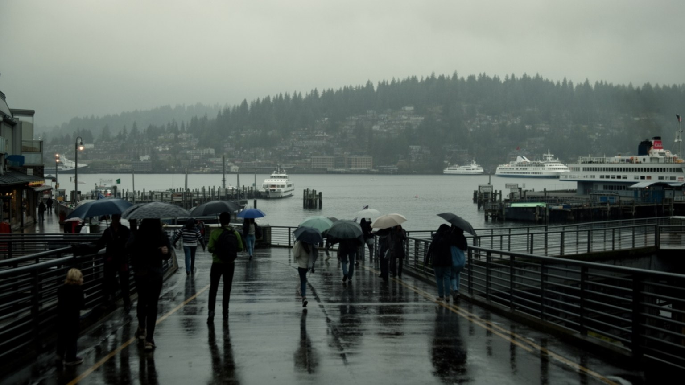
シアトルの気候は、強い豪雨よりも細かな雨、曇り空、湿った冬、乾いた夏によって記憶される。雨は単なる天気ではなく、服装、通勤、カフェ、読書、屋内文化、舗装の光、坂道の歩き方を変える都市のリズムである。ピュージェット湾、レイク・ユニオン、レイク・ワシントン、運河、フェリー航路は、市街地を水の都市として感じさせる。ウォーターフロント再整備は観光客に開かれた歩行空間を生みつつ、港湾機能、漁業、先住民の権利、地震や海面上昇への備えも問い直す。雨の多さは緑を育てるが、斜面崩壊、排水、老朽インフラ、水質汚染への対策も必要にする。夏の晴れた日には、山と水面が一気に近くなり、冬の暗さとは別の都市が現れる。シアトルの美しさは、晴れた絵葉書だけでは説明できない。曇天の下で働き、歩き、待ち合わせ、フェリーに乗る時間こそ、都市の身体感覚を作っている。水辺の整備は公共空間を広げるが、観光消費に偏れば日常の港や漁業の記憶を薄める。雨を受ける屋根、排水路、街路樹、地下インフラまで含めて見ると、気候は景観ではなく都市運営そのものになる。気候変動で夏の暑さや煙の日が増えると、従来の涼しい都市像も変わる。冷房、避難場所、樹木の多い歩道、水質管理は、これからの暮らしを守る実務になる。水と雨を味方にできるかどうかが、都市の快適さを決める。
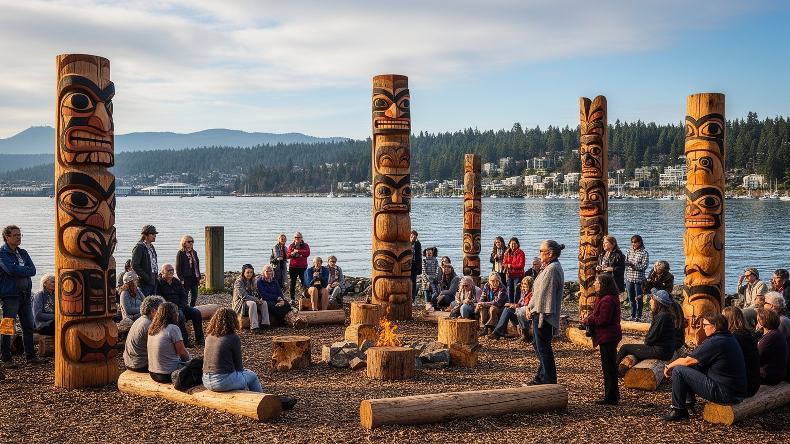
シアトルという名は、先住民指導者の名に由来するが、都市の成長はしばしば先住民の土地、水域、漁業、言語、移動の歴史を見えにくくしてきた。デュワミッシュ、スクアミッシュ、チューラリップなどの人びとは、湾、河口、川、森を生活圏としてきた。都市化、条約、連邦政策、埋め立て、工業汚染は、サケの遡上、貝採り、カヌーの移動、共同体の継続に大きな影響を与えた。現在も文化センター、彫刻、地名、教育活動、漁業権、環境回復の取り組みを通じて、先住民の存在は都市の中に戻されつつある。観光客がトーテムや博物館展示を見るだけでは、現在の政治的な課題は理解できない。土地承認の言葉、河川浄化、部族政府との協議、都市部に暮らす先住民の医療や教育が、日々の政策として問われる。シアトルを読むことは、近代都市の前から続く水辺の記憶を、現在の都市計画と重ねることでもある。学校や博物館が歴史を語り直すだけでなく、開発許可、河川再生、公共アート、祝祭の場に先住民の判断が反映されるかが重要になる。都市の名前を口にするたび、その名が誰の土地と関係しているのかを忘れない姿勢が求められる。先住民の存在を過去の象徴に閉じ込めず、住宅、健康、文化教育、漁業、環境正義の現在形として扱うことが欠かせない。水辺の再開発が進むほど、誰の記憶が景観に残るのかが問われる。
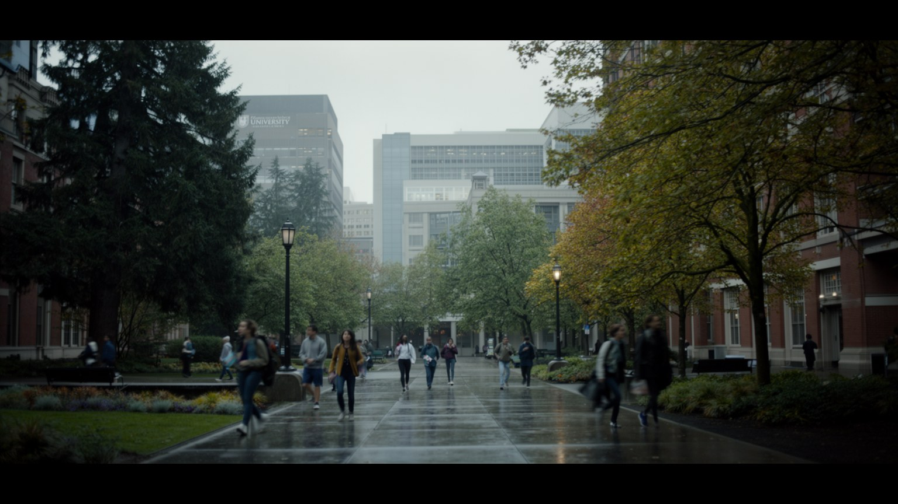
ワシントン大学を中心とする研究環境は、シアトルの産業と文化を深く支えている。医学、公共衛生、コンピューター科学、海洋、気候、材料、都市政策の研究は、病院、企業、財団、行政、国際機関と結びつく。大学地区には学生、研究者、移民、書店、安い食堂、公共交通が集まり、都市の若い知的な空気を作る。研究成果は新会社や特許に変わることもあれば、地域医療、環境監視、感染症対策、交通計画に使われることもある。一方で、大学の拡張や周辺家賃の上昇は、低所得の学生や長期住民に負担をかける。研究都市としての強さは、優秀な人材を呼び込むだけでなく、誰が学びに参加できるかという公平性に左右される。シアトルの知識経済は、企業キャンパスだけで完結しない。図書館、病院、実験室、講義室、公共政策の議論が、水辺の都市圏に人材と問いを循環させている。留学生や移民研究者は国際的な視野を運び、地域の高校やコミュニティカレッジは次の労働力を育てる。学問が企業利益に近づきすぎる危うさもあるため、公共性を保つ研究資金と開かれた教育機会が都市の質を左右する。大学病院や研究所は地域の患者を受け入れ、世界的な課題を扱いながら近隣の雇用も生む。学生の流入は街に活気を与えるが、住居や交通への負担も増やすため、知識都市の成長には生活基盤の設計が伴う。
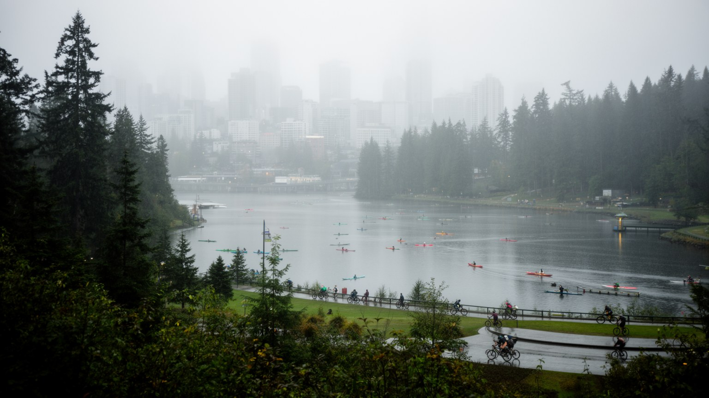
シアトルの暮らしは、都市と自然の距離が近いことで強く特徴づけられる。市内には公園、湖岸、緑道、樹木の多い住宅地が広がり、少し移動すればカスケード山脈、オリンピック半島、スキー場、ハイキング路、島々へ向かえる。自然への近さは都市の魅力であり、環境意識やアウトドア産業を育ててきた。だがそれは、先住民の土地、森林伐採、気候変動、山火事の煙、野生生物との距離、観光による混雑という問題とも結びつく。公園の整備状況や樹冠の多さは地区によって差があり、暑さや大気汚染への脆弱性にも影響する。週末に山へ出る余裕がある人と、長い通勤や複数の仕事で自然を楽しむ時間がない人の差も見逃せない。シアトルの都市自然は、豊かな余暇の象徴であると同時に、環境正義の課題でもある。水と森を誇る都市ほど、その恩恵を誰が受けられるのかが問われる。サケが戻る川、都市農園、街路樹の保全、雨水を受ける緑地は、景観を良くするだけでなく気候変動への適応策でもある。自然が近い都市だからこそ、開発、保全、アクセスの公平さを同時に設計する必要がある。人気の登山口や島へのフェリーは混雑し、余暇の移動も環境負荷を持つ。自然を楽しむ文化が強いほど、その利用を支える交通、駐車、保護費用、地域住民への配慮も都市の責任になる。身近な緑の質が、毎日の健康にも効いてくる。
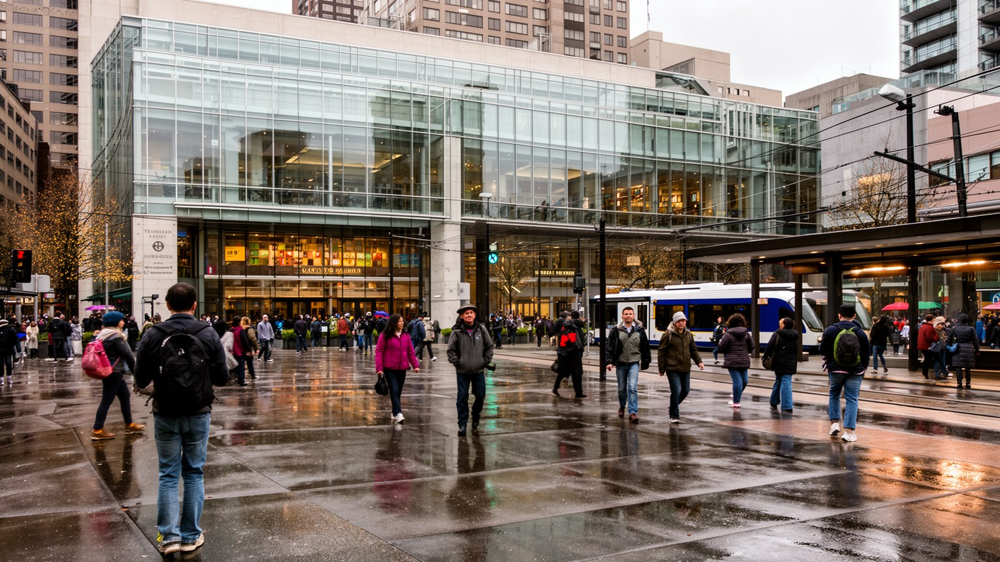
シアトルは進歩的な政治文化で知られるが、実際の市政は単純ではない。環境政策、最低賃金、労働組合、警察改革、ホームレス支援、住宅供給、公共交通、薬物問題、学校、税制をめぐって、住民、企業、非営利団体、労働者、郊外自治体がしばしば対立する。高所得の専門職が社会正義を支持しても、自宅近くの高密度住宅や支援施設には抵抗することがある。テック企業への課税は財源を生む可能性がある一方、雇用や投資への影響をめぐる議論を呼ぶ。抗議行動、地域集会、新聞、ポッドキャスト、大学の研究、裁判は、都市の方向をめぐる公共圏を形づくる。市民参加が活発であることは強みだが、時間や情報を持つ人の声が大きくなりやすい。シアトルを読むには、リベラルな都市というラベルだけでなく、理念が道路、住宅、警察、予算に変わる場面でどんな妥協と衝突が起きるのかを見る必要がある。市域を越えれば郊外自治体との利害も変わり、交通や住宅の負担をどこで引き受けるかが争点になる。豊かな都市ほど合意形成の手続きが重くなり、迅速な対策と民主的な参加の両立が難しくなる。投票率、地域集会への参加、行政文書を読む時間の差は、政策に届く声の差にもなる。市民的な街であるほど、参加できない人の生活条件をどう補うかが問われる。声の大きさと困窮の深さは、必ずしも一致しないからだ。
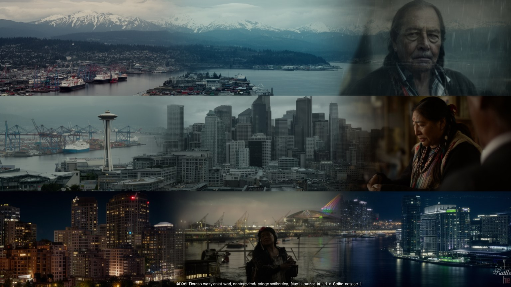
シアトルは、テック企業の都市、雨の街、音楽の街、港町、山に近い暮らしという複数のイメージを持つ。どれも正しいが、それだけでは全体を説明できない。クラウドの利益は港湾物流、航空宇宙の技能、大学研究、移民労働、公共インフラに支えられ、文化の自由さは住宅費の上昇によって脅かされる。水辺の美しさは先住民の記憶と環境回復の課題を含み、観光地のにぎわいは清掃、警備、調理、配送の労働によって保たれる。都市圏はシアトル市だけでなく、ベルビュー、レドモンド、エバレット、タコマ、島々、郊外住宅地まで広がる。国際的な経済力を持ちながら、日常は雨の坂道、フェリー待ち、家賃の支払い、学校区、週末の山行きでできている。シアトルを読むことは、世界市場と地域生活がどのように同じ水辺でぶつかり、助け合い、排除を生むのかを確かめることでもある。旅行者には短い滞在でも、市場、港、音楽、展望台、湖畔が強く印象に残る。住民にはその背後で、通勤、医療、学校、治安、雨の日の移動、家賃更新が続く。両方を重ねると、シアトルは洗練されたブランドではなく、成長の利益と負担を毎日調整する生きた都市として見えてくる。経済統計は重要だが、都市の意味は数字の外側にある。水辺で働く人、研究室で学ぶ人、路上で支援を待つ人、音楽を続ける人を同時に見ることで、シアトルの世界性はようやく立体になる。